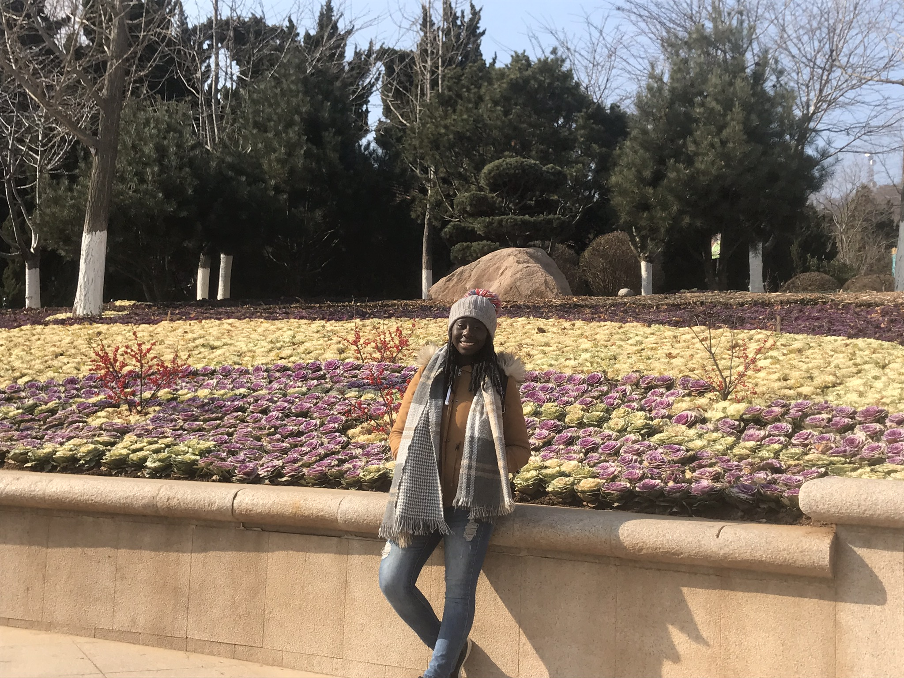
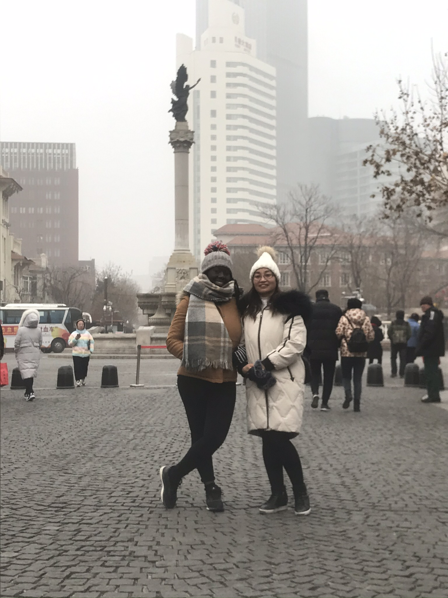
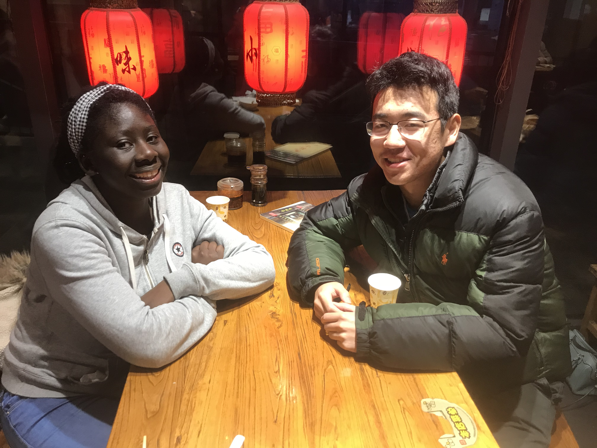
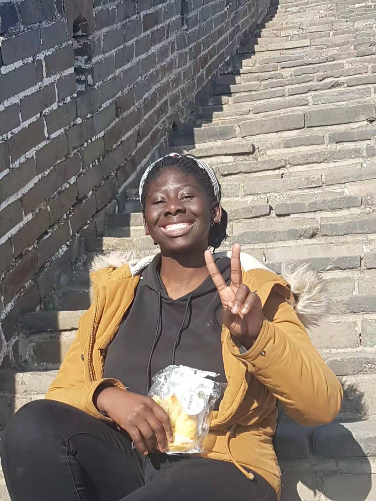
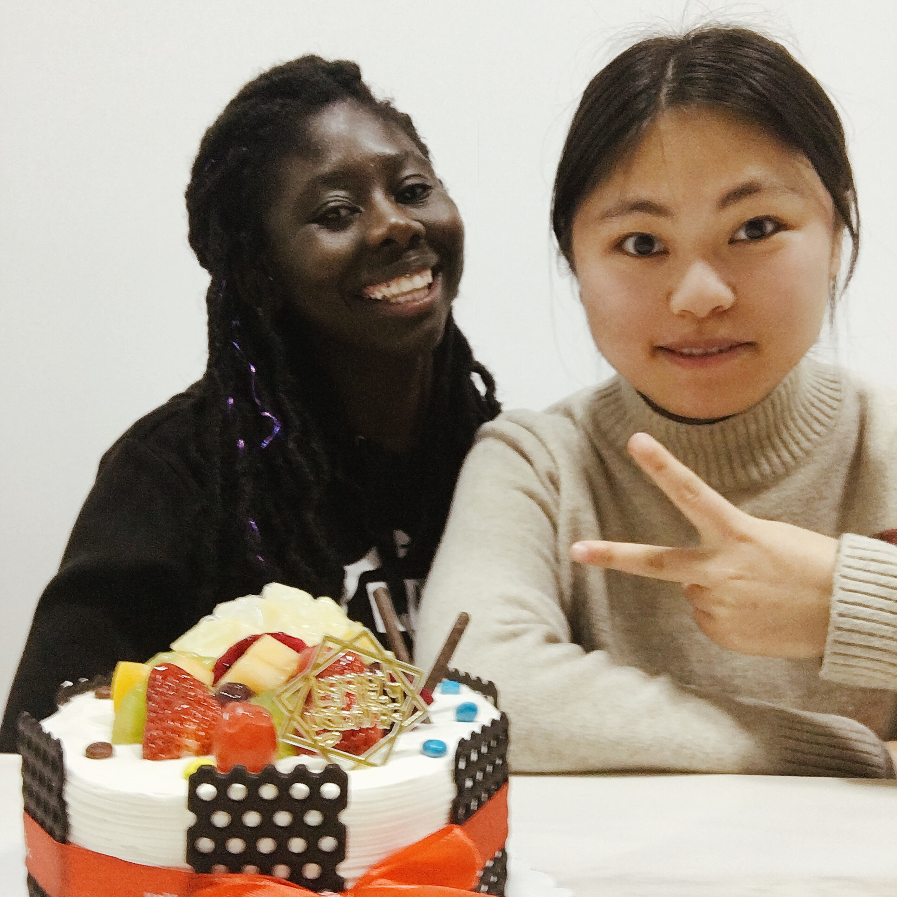
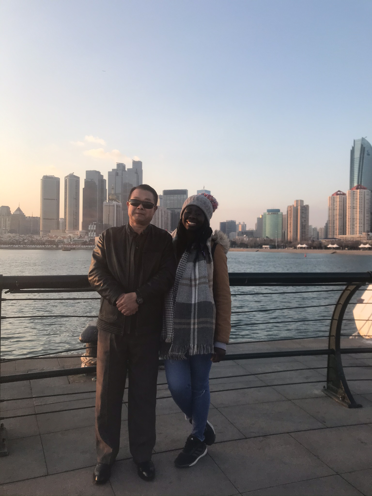

Black girl in China!
I remember when I first told people I was going to China, some were shocked, some were amazed, some just didn’t care, and some were worried. Why? Because you hear so many stories of black people in China and how all they do is take pictures of you and act somewhat racists towards you. But I tell you different, it was one of my best experiences ever!
I went to China with the intention to teach English as a foreign language. In fact, I did teach but only for a few months then the virus broke out. Anyways China is a beautiful place with a wonderful history, beautiful culture and amazing people.I was in China for 4 months; I wish I could tell you every moment and every memory but you’ll be reading for hours and we don’t have time for that.
I was blessed to have travelled to the North of China to places such as Qingdao which is by the coast, Tianjin, Beijing and Shanghai. I was also so blessed to come across wonderful and great people. One thing that people don’t tell you about Chinese people is that they are so hospitable, so caring and so loving. From the moment I stepped into
China I was surrounded by people who just wanted to help me, who wanted to make sure I go ok and settled.
Another thing they don’t tell you about Chinese people is that they love sharing. I remember I was on the bus going from the airport back to my house and there was this old man. He was so lovely and eager to speak to me, but we didn’t know how because of the language barrier so we communicated via google translator. Throughout the whole journey which was 3 hours he made sure that I was fed and keep hydrated.

We stopped off at the shop where he bought food and kindly offered it to me. One rule in china is that if someone is offering you something can’t say no. It’s almost like its forbidden. That in itself changed by views and perception of China and its people. I saw China in a way that most people don’t, I saw China as a place where they don’t know nothing about black people and black culture, I saw china as a place where people are intrigued by the way we look, by the texture of our hair because it is not the norm for them. Most of us come from places where there’s a lot of diversity and we bumped into different people every day, where we learn to value others and their cultures, sorry to say China is not a place like that. Its a place where people are still learning, it’s a place where the truth has somewhat been hidden, it’s a place where people do want to learn but they don’t know how. It is very important to know the history of the places we go to and the government because we begin to realise that most people live in a bubble that they don’t even know they are living in.
I have travelled to a few countries in Africa which non people of colour and I see the fasincation that Africans have with Europeans because its not the norm there just like we are not the norm in China. One thing we also need to realise it’s not just people if colour who gets weird states and sneaky photos… it happens to Europeans people too. Maybe not to the same extent… dare I say it we just radiate in a different light we just glow in a special way but nonetheless it happens. Therefore, we shouldn’t be sceptical of afraid to tries new things or go to new places. Whatever your fears are about people discriminated againt you get that even when you are at home.
Overall, China exceeded my expectations and I urge you not to write it off just yet. I personally do think when you go to China maybe try out other cities not just Beijing and Shanghai even though they are beautiful, but other places like Nanjing, Chengdu, Wuhan are also amazing. The smaller cities have a lot to offer just like the bigger cities if not more.
Like anywhere in the world you will get some weird looks, you will get people taking… well sneaking around taking random pictures of you, others might have a real dislike for you, like other places in the world there are mean people… BUT that shouldn’t stop you from experiencing life and the world. It is such a beautiful place with rich culture and good people. So, I guess what I’m saying is when you go places like China where there has been so much negativity about how they treat people from other countries and cultures, you have to go with an open mind. You never know what you might experience, and it might just surprise you!





